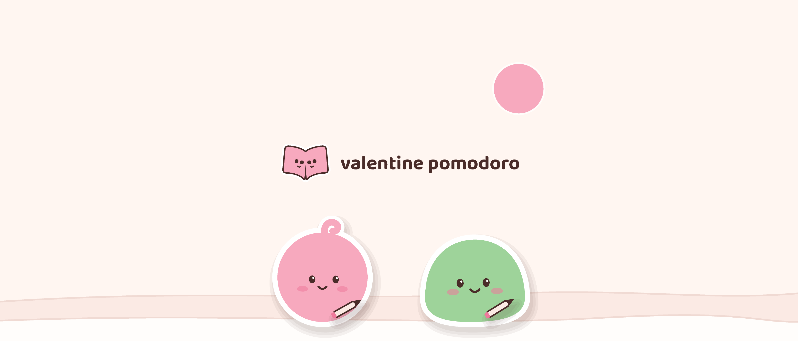
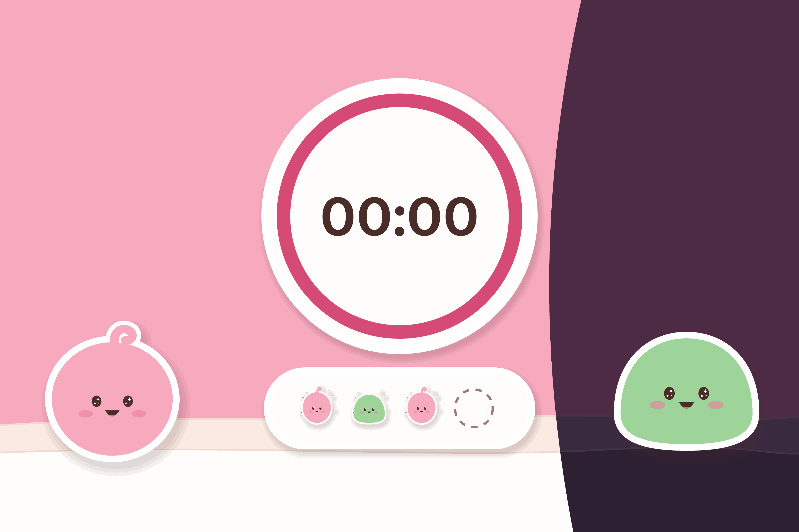
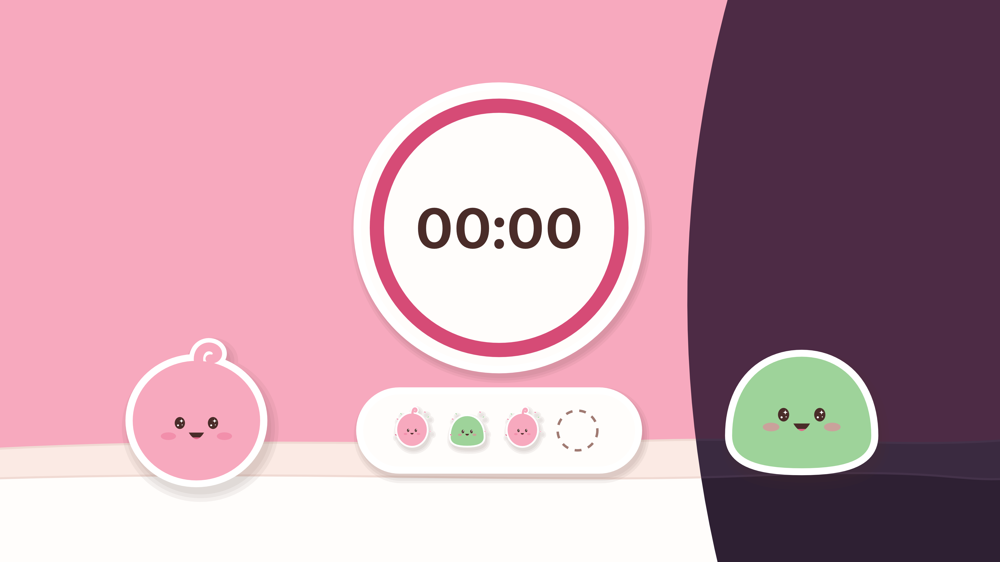

<meta charset="utf-8">
<title>Creative Assets Preview</title>
<meta name="claude:viewport-fit-sides" content="cover">
<link rel="preconnect" href="https://fonts.googleapis.com">
<link rel="stylesheet" href="https://fonts.googleapis.com/css2?family=Baloo+2:wght@600&display=swap">
<style>
/* Layout: one review column; each placement at its real proportions, then the stills. */
:root { --page: #FFF6F1; --paper: #FFFDFB; --field: #FBEAE4; --edge: #F0DAD3; --ink: #4A2C29; --ink-soft: #7D5A54; --primary-ink: #B03158; --display: 'Baloo 2', ui-rounded, system-ui, sans-serif; --body: system-ui, -apple-system, 'Segoe UI', sans-serif; }
@media (prefers-color-scheme: dark) { :root:not([data-theme="light"]) { --page: #221726; --paper: #2E2033; --field: #3A2A40; --edge: #44324A; --ink: #FFF3EE; --ink-soft: #CDB3C6; --primary-ink: #FF9EBB; color-scheme: dark } }
:root[data-theme="dark"] { --page: #221726; --paper: #2E2033; --field: #3A2A40; --edge: #44324A; --ink: #FFF3EE; --ink-soft: #CDB3C6; --primary-ink: #FF9EBB; color-scheme: dark }
body { background: var(--page); color: var(--ink); font: 16px/1.5 var(--body); }
main { max-width: 1120px; margin: 0 auto; padding-block: 32px 64px; padding-left: max(16px, env(safe-area-inset-left, 0px)); padding-right: max(16px, env(safe-area-inset-right, 0px)); display: grid; gap: 40px; }
h1, h2 { font-family: var(--display); font-weight: 600; margin: 0; text-wrap: balance; }
h1 { font-size: clamp(30px, 5vw, 44px); line-height: 1.05; }
h2 { font-size: 22px; }
p { margin: 6px 0 0; color: var(--ink-soft); max-width: 68ch; }
video, img { display: block; max-width: 100%; }
.wide { width: 100%; aspect-ratio: 21 / 9; border-radius: 14px; background: var(--field); }
.row { display: flex; flex-wrap: wrap; gap: 24px; align-items: flex-start; }
.phone { width: min(100%, 393px); background: var(--paper); border: 1.5px solid var(--edge); border-radius: 28px; padding: 0 0 16px; overflow: hidden; }
.slice { width: 100%; aspect-ratio: 1.5 / 1; object-fit: cover; object-position: center; }
.app { display: grid; grid-template-columns: 56px 1fr auto; gap: 12px; align-items: center; padding: 14px 16px 0; font-size: 15px; }
.app img { width: 56px; height: 56px; border-radius: 13px; }
.get { font: 700 14px var(--body); color: var(--primary-ink); background: var(--field); border-radius: 999px; padding: 5px 16px; }
.card { width: min(100%, 393px); background: var(--paper); border: 1.5px solid var(--edge); border-radius: 22px; padding: 14px; display: grid; gap: 12px; }
.card video { width: 100%; aspect-ratio: 3 / 2; border-radius: 12px; }
.stills { display: grid; grid-template-columns: repeat(auto-fit, minmax(min(100%, 320px), 1fr)); gap: 18px; }
figure { margin: 0; display: grid; gap: 6px; }
figcaption { font-size: 14px; color: var(--ink-soft); }
.stills img { width: 100%; border-radius: 10px; border: 1.5px solid var(--edge); }
ul { margin: 6px 0 0; padding-left: 20px; color: var(--ink-soft); max-width: 68ch; }
code { font-size: 13px; }
</style>
<main>
  <header>
    <h1>Pomo &amp; Doro's day</h1>
    <p>Valentine Pomodoro 1.4's App Store creative assets: a 20-second loop for the product page header and one for search results, cut from one scene, with no screen and no words but the name. They are shown only on iOS 27 and iPadOS 27 and later. Both are silent, and both loop seamlessly: the last frame runs straight into the first.</p>
  </header>
  <section>
    <h2>Header (21:9, 3840 × 1646)</h2>
    <p>The whole frame, as on iPad and in landscape:</p>
    <video class="wide" src="../out/creative/creative-header.mp4" autoplay muted loop playsinline aria-label="The header loop"></video>
    <p>On an iPhone in portrait, only the centre of the header shows (an estimate: check it in App Store Connect's Preview):</p>
    <div class="phone"><video class="slice" src="../out/creative/creative-header.mp4" autoplay muted loop playsinline aria-label="The header loop as an iPhone shows it"></video>
      <div class="app"><b>Valentine Pomodoro</b><span class="get">Get</span></div></div>
  </section>
  <section>
    <h2>Search results (3:2, 3456 × 2304)</h2>
    <p>In search results, this loop replaces the screenshots, at about the phone's width. It is 3456 × 2304, inside Apple's 1920 × 1280 to 3840 × 2560: at 3840 × 2560 an H.264 video goes past what phone and browser GPU decoders play.</p>
    <div class="card"><div class="app" style="padding:0"><b>Valentine Pomodoro</b><span class="get">Get</span></div>
      <video src="../out/creative/creative-search.mp4" autoplay muted loop playsinline aria-label="The search results loop"></video></div>
  </section>
  <section>
    <h2>Stills and poster frames</h2>
    <p>Each video asset has one poster frame, set in App Store Connect's Asset Library. These stills are those frames, plus the 16:9 universal backup, which can stand in for both placements.</p>
    <div class="stills">
      <figure><figcaption>Header still, 3840 × 1646 PNG. Poster frame at 1.80 s (frame 54).</figcaption></figure>
      <figure><figcaption>Search still, 3840 × 2560 PNG. Poster frame at 11.20 s (frame 336).</figcaption></figure>
      <figure><figcaption>Universal still, 16:9, 5244 × 2950 PNG, wordless, for both placements.</figcaption></figure>
    </div>
  </section>
  <section>
    <h2>For App Store Connect</h2>
    <ul>
      <li>Files are in <code>art/out/creative/</code>: <code>creative-header.mp4</code>, <code>creative-search.mp4</code> and the three PNGs. The loops are H.264 at 30 fps, 20 s long, in BT.709, with no audio. The PNGs are RGB with no alpha.</li>
      <li>Upload them on the 1.4.0 version page, under Product Page Information &gt; Header and Search Results, or through Asset Library. Then set each video's poster frame to the times above.</li>
      <li>Before submitting, check App Store Connect's Preview on iPhone and iPad, in both orientations.</li>
    </ul>
  </section>
</main>
